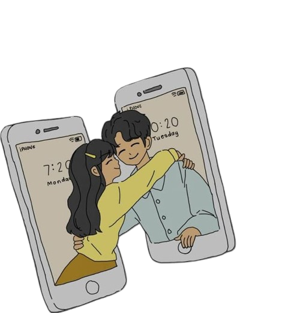

Para mi angelito, Alexandra 💜
Desde la distancia, pero con todo mi corazón, te escribo estas palabras que quizás no alcancen a describir lo mucho que significas para mí. No hay un solo día en que no agradezca por haberte encontrado, por tenerte en mi vida y por sentir tu amor, aunque los kilómetros nos separen.
Eres mi luz en los días grises, mi refugio cuando el mundo pesa demasiado. A veces cierro los ojos y me imagino a tu lado, tomándote de la mano, sintiendo el calor de tu abrazo, escuchando tu risa… Y aunque aún no pueda tenerte físicamente conmigo, mi corazón te lleva siempre, en cada latido, en cada pensamiento.
Nuestra historia es única, porque a pesar de la distancia, nuestro amor sigue creciendo, fuerte y verdadero. Y aunque extraño cada segundo que no estoy contigo, también sé que todo esto vale la pena, porque tú lo vales, porque lo nuestro es real y porque algún día, cuando estemos juntos, cada instante de espera habrá valido la pena.
En este San Valentín, quiero recordarte lo increíble que eres y lo mucho que te amo. Mi angelito, gracias por existir, por darme tu amor, por llenar mis días de felicidad y por demostrarme que no hay distancia que pueda contra dos corazones que laten al mismo ritmo.
Te amo con toda mi alma.
Siempre tuyo, a yo daly 💜
